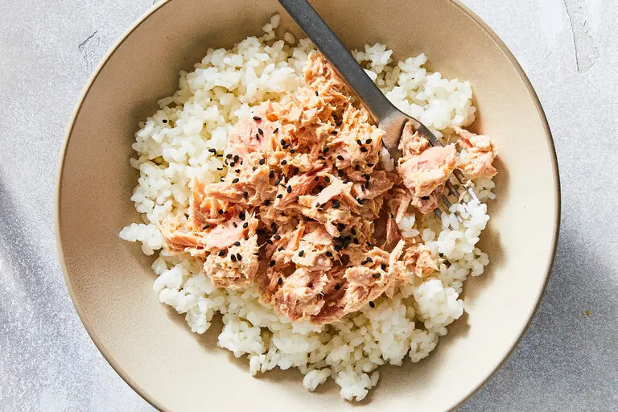

Tuna and Rice

A simple Tuna and Rice recipe made with mayonnaise, canned tuna, salt and pepper, green onions, and whatever your heart desires!
Get creative with the seasonings!
Parsely, Thyme, and Dill are some of my favorites to put on this dish.
Ingredients
- 1 Can of Tuna (5oz)
- 1 Cup White or Brown Rice
- 1 Cup Water (or, 2 Cups Water if using Brown Rice)
- 2 Green Onions
- Mayonnaise
- Salt and Pepper, to serve
- Garlic and Onion Powder, to serve
Steps
- Combine and cook the Rice and Water in a rice cooker.
- While the Rice is cooking, chop the Green Onions
- Once finished, serve the Rice into a bowl.
- Stir the Mayonnaise into the Rice into the bowl with a fork. Use as much or as little Mayonnaise as you prefer
- Drain the Can of Tuna. Top it onto the Rice.
- Top the Tuna and Rice with the Green Onions.
- Add Salt, Pepper, Garlic Powder, Onion Powder, and any seasonings of your choice!